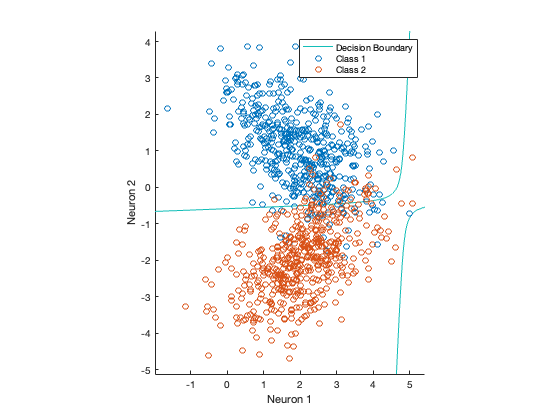
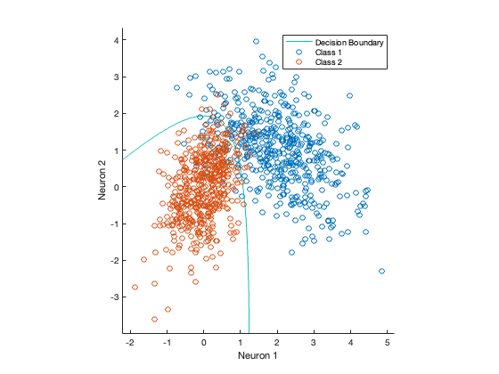
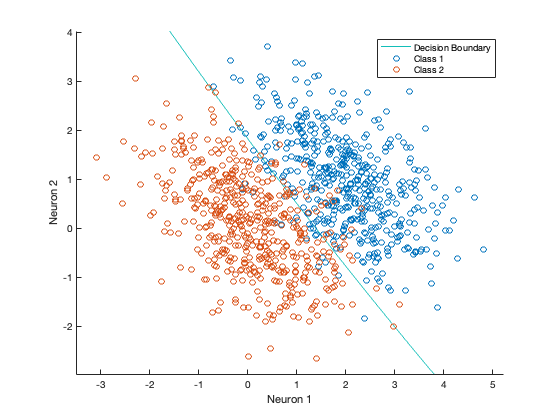
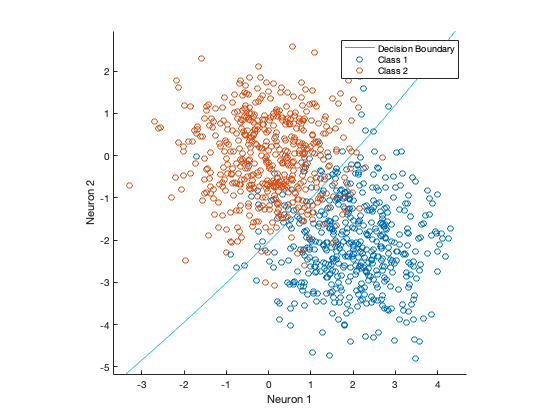
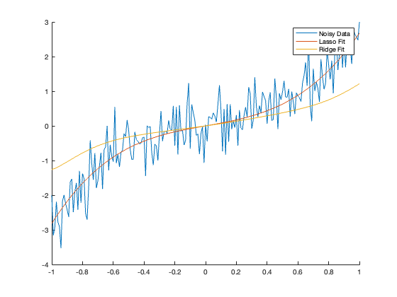
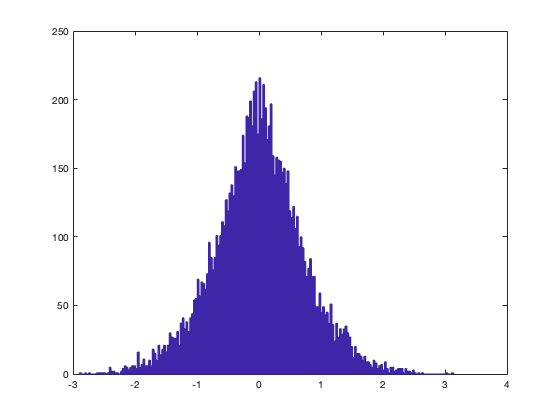
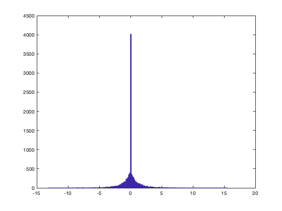
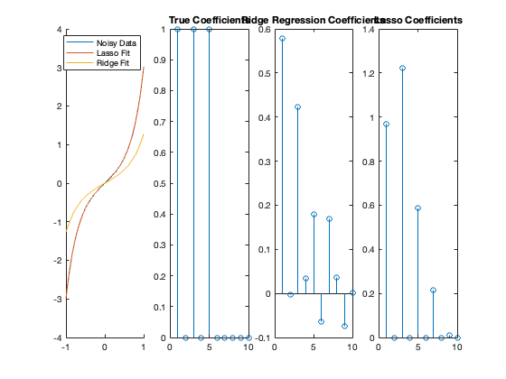

Lab 10: Classification, Regularization and Clustering
SOLUTIONS
Contents
Classification
% The function boundaryViz provided at the bottom of this script takes in % two sets of data and follows the procedure outlined below in order to % visualize a decision boundary between the two classes: % % 1) Compute estimates of each groups covariance structure (the % empirically observed covariance). % % 2) For each point in a reasonable range, evaluate the likelihood a sample % said point came from either group, which is modeled as gaussian with % mu = mu_obs, sigma = sigma_obs % % 3) Use the matlab contour function to draw the decision boundary % % Make sure you understand (roughly) the implementation of this function % and how the example below works sigma_1 = [1, -0.5;-0.5, 1]; sigma_2 = [1, 0.5; 0.5, 1]; mu_1 = [2, 1]'; mu_2 = [2, -2]'; X1 = ndRandn(mu_1, sigma_1, 500); X2 = ndRandn(mu_2, sigma_2, 500); boundaryViz(X1, X2); % 1) Quadratic Discriminant Analysis % QDA assumes that the processing underlying the data generation for each % class is its own independent Gaussian distribution, but nothing else. % That is QDA solves the most general version of the classification % problem if we assume that each class is well modeled by a gaussian (with % each class having its own mean and covariance matrix) % % Use the functions ndRandn (should be familiar) and boundaryViz to % visualize some boundary curves in the general case (where the 2 classes % have data drawn from completely unrelated normal distributions). % % Start off with the settings below and then toggle the means, % covariances, and number of points used. Try to qualitatively explain % what you observe. % try these, then generate some of your own examples sigma_1 = [1, -0.5;-0.5, 1]; sigma_2 = [1, 0.5; 0.5, 1]; sigma_3 = [0.3, 0.25; 0.25, 1]; mu_1 = [2, 1]'; mu_2 = [2, -2]'; mu_3 = [0, 0]'; n_pts = 500; % vary this X1 = ndRandn(mu_1, sigma_1, n_pts); X2 = ndRandn(mu_2, sigma_2, n_pts); X3 = ndRandn(mu_3, sigma_3, n_pts); % ANSWER: call this many times boundaryViz(X1, X3); % 2) Fisher Linear Discriminant % The general problem above can be constrained by assuming that % the covariance strucuture is shared between the two classes (they have % the same covariance matrix but different means). Now generate two sets % of data that fit this description and visualize the decision boundary. % As above first use the set of parameters provided below and then play % around with each (the shared covariance, mean values, and number of data % points) to get a sense for how each affects the solution. % now data from all classes should have same covariance n_pts = 500; % vary this sigma = sigma_1; X1 = ndRandn(mu_1, sigma, n_pts); X2 = ndRandn(mu_2, sigma, n_pts); X3 = ndRandn(mu_3, sigma, n_pts); % ANSWER: call this many times boundaryViz(X1, X3); % In class it was shown that this constraint is actually sufficient to % arrive at a closed for solution and that the optimal decision boundary % is a linear surface (a line in 2-D). How well does this match the % visualizations you generated empirically above? Why? % Answer: The decision boundary appears to be close to a plane most of the % time, but there is sometimes some noticable curve. This is because the % empirically inferred covariances from each class do not exactly meet the % assumptions for which the FLD is optimal. Indeed one of the central % difficulties of using QDA in high dimensions is that a large amount of % data is needed to accurately estimate the covariance matrix. On the % other hand, this is one of the clear benefits to using the special case % solutions: if the required assumptions are (approximately) true, you can % get a closer to optimal solution using less data than when applying the % unconstrained method. % 3) The Prototype Classifier % Finally we can restrict the problem to the special case where the % classes share a covariance matrix and that covariance matrix is a scalar % multiple of the identity matrix. Generate data that according to this % assumption and visualize the resulting decision boundaries. (First use % the provided parameters then...you know) n_pts = 500; % vary this s = 1.0; sigma = [1.0, 0; 0, 1.0]; X1 = ndRandn(mu_1, sigma, n_pts); X2 = ndRandn(mu_2, sigma, n_pts); X3 = ndRandn(mu_3, sigma, n_pts); boundaryViz(X2, X3); % In class we saw that the MLE solution in this setting leads to a % boundary surface that is the perpendicular bisector of the line segment % between the class means. Does the method for computing boundary curves % employed here seem to reliably find that solution? % Answer: Similar to above. The quality of the QDA as it pertains to % approaching the prototype classifier on this data (which we know to be % optimal) depends on the ability to accurately estimate the covariance % matrices from the data.   
Regularization
% Below is an example meant to demonstrate the syntax used by matlab's % built in functions for ridge and lasso regression x = -1:0.01:1.0; x = x'; X = [x, x.^2, x.^3, x.^4, x.^5, x.^6, x.^7, x.^8, x.^9, x.^10]; weights = randn(11, 1); weights = [1 0 1 0 1 0 0 0 0 0]'; y = X*weights + 0.5*randn(size(x)); [B_lasso, finfo] = lasso(X, y, 'lambda', 0.03, 'Intercept', true); B_lasso; lambda = 0.01; B_ridge = ridge(y, X, lambda); B_ridge; figure; hold on; plot(x, y); plot(x, X*B_lasso); plot(x, X*B_ridge); legend('Noisy Data', 'Lasso Fit', 'Ridge Fit'); % 1) Ridge Regression % We've shown previously optimizing mean square error is equivalent to % solving MLE if one assumes a gaussian model for the data (with the key % observation being that taking a log of a gaussian likelihood function % leaves you with a squared error term). More recently we saw that adding % an additive L2 penalty to the objective function is equivalent to % imposing a Gaussian prior on the parameters and then performing MAP % estimation. % % First we will tease apart what it means to "enforce some prior," by % putting the model in a situation where it only has the information % provided by its prior to decide on a set of parameters: fitting noise. % Fill in the skeleton code below and explain the results. % define regressor features (note lack of y-intercept) x = [-1:0.01:1]'; X = [x, x.^2, x.^3, x.^4, x.^5, x.^6, x.^7, x.^8, x.^9, x.^10]; % define lambda lambda = 0.1; n_expts = 1000; running_list_of_all_coeffs = []; for ii = 1:n_expts % make some noise to fit y = randn(size(x)); % For the purpose of this lab, you are free to use either the closed \ % form solutionfound in the slides from class or matlab's built-in % function. On the HW you should compute the solution for ridge % regression yourself. B = 0; % REPLACE THIS LINE %Answer B = ridge(y, X, lambda); running_list_of_all_coeffs = [running_list_of_all_coeffs, B']; end figure; hist(running_list_of_all_coeffs, 200); % Does the shape of the distriubition of parameters make sense given the % MAP interpretation of ridge regression? % 2) LASSO % We could instead choose to penalize using the L1 norm of the parameters, % doing so is the basis of LASSO regression. What difference does this % choice make? Consider the unit circle: all points on the circle by % definition all have the same L2 norm, but the four axis intercepts have % minimal L1 norms. Thus we might expect LASSO to prefer solutions where % some parameters are pushed towars exactly zero. % Repeat the noise fitting experiment above, but this time use Lasso and % lambda = 0.001 % ANSWER: n_expts = 1000; running_list_of_all_coeffs = []; for ii = 1:n_expts % make some noise to fit y = randn(size(x)); % For the purpose of this lab, you are free to use either the closed \ % form solutionfound in the slides from class or matlab's built-in % function. On the HW you should compute the solution for ridge % regression yourself. B = 0; % REPLACE THIS LINE %Answer B = lasso(X, y, 'lambda', 0.001); running_list_of_all_coeffs = [running_list_of_all_coeffs, B']; end figure; hist(running_list_of_all_coeffs, 200); % Does the shape of the distriubition of parameters make sense given the % MAP interpretation of LASSO? % 3) Behavior with variable lambda and SNR % Change between different weight settings, values for the variable sigma, % and values of lambda. See what insignts you can glean! % % Besides the usual array of model selection techniques (cross-validation, % etc.) can you see any way to determine why you might prefer one method % over the other (i.e. interpretability)? sigma = 0.01; %weights = randn(10, 1); weights = [1 0 1 0 1 0 0 0 0 0]'; y = X*weights + sigma*randn(size(x)); lambda = 0.001; [B_lasso, finfo] = lasso(X, y, 'lambda', lambda); B_ridge = ridge(y, X, lambda); figure; hold on; subplot 141; hold on; plot(x, y); plot(x, X*B_lasso); plot(x, X*B_ridge); legend('Noisy Data', 'Lasso Fit', 'Ridge Fit'); subplot 142; stem(weights); title('True Coefficients'); subplot 143; stem(B_ridge); title('Ridge Regression Coefficients'); subplot 144; stem(B_lasso); title('Lasso Coefficients');   
Clustering
The provided function mykmean takes three inputs (data, number of clusters, and maximum number of iterations) and returns 4 sets of values (center_ids (which maps each point to a cluster number), centers ( the converged centroid points), the number of iterations until convergence, and the total distance from points to their assigned centers).
First run the algorithm and visualize the results using the parameters and data defined below. Then play around with the data generation and algorithm. In particular qualitatively comment on how the clustering algorithm handles: clusters with different covariance structures (either shared or unique to each cluster) and a mismatch between the "true," number of clusters and the parameter k, and the total number of datapoints in each cluster.
% example parameters sigma_1 = [1, -0.5;-0.5, 2]; sigma_2 = [1, 0.5; 0.5, 1]; mu_1 = [2, 0]'; mu_2 = [0, -2]'; k = 2; maxiter=200; % build data as sets of clusters, i.e. data_1 = ndRandn(mu_1, sigma_1, 1000); data_2 = ndRandn(mu_2, sigma_2, 1000); data = [data_1; data_2]; [ cids,centers,niter,alldist ] = mykmean(data,2, maxiter); figure; hold on; for kc = 1:2 % scatter points by cluster scatter(data(cids==kc,1), data(cids==kc,2),'o') hold on end % display cluster centers scatter(centers(:,1),centers(:,2),'s','filled')
Functions
function samples = ndRandn(mean, cov, num) % num parameter is optional if nargin < 3 num = 1; end % Standard Normal Data D = randn(size(mean, 1), num); % Take SVD of Cov [U, S, V] = svd(cov); L = S.^(0.5); % rotate standard normal samples by V, scale by sqrt of singular values samples = V*L*D; % shift by mean samples = samples + mean; % return transpose to fit specifications samples = samples'; end function none = boundaryViz(X1, X2) none = 0; % determining the range for the search min_x = min(min(X1(:, 1)), min(X2(:, 1))); min_y = min(min(X1(:, 2)), min(X2(:, 2))); max_x = max(max(X1(:, 1)), max(X2(:, 1))); max_y = max(max(X1(:, 2)), max(X2(:, 2))); % setting up the grid n_pts = 100; margin_x = 0.05 * abs(max_x - min_x); margin_y = 0.05 * abs(max_y - min_y); x = linspace(min_x - margin_x, max_x + margin_x, n_pts); y = linspace(min_y - margin_y, max_y + margin_y, n_pts); [X, Y] = meshgrid(x, y); Z = zeros(size(X)); % Estimating the parameters for Gaussian model of data (Likelihood function) sig1 = cov(X1); sig2 = cov(X2); mu1 = mean(X1); mu2 = mean(X2); for i = 1:n_pts for j = 1:n_pts x0 = [x(i), y(j)]'; % This is the ratio of the log of the ratio of likelihoods % (convince yourself) a = 0.5*(log(det(sig2)) - log(det(sig1))); b = -0.5 * (x0-mu1')'*pinv(sig1)*(x0-mu1'); c = -0.5 * (x0-mu2')'*pinv(sig2)*(x0-mu2'); Z(i, j) = a + b - c; end end figure; hold on % the decision boundary is where log likelihoods are equal to each other contour(X, Y, Z', [0, 0]); scatter(X1(:, 1), X1(:, 2)); scatter(X2(:, 1), X2(:, 2)); xlabel('Neuron 1'); ylabel('Neuron 2'); legend('Decision Boundary', 'Class 1', 'Class 2'); axis equal; end function [ cids,centers,niter,alldist ] = mykmean(data,ncluster,maxiter) % AUTHOR: Ionotan Kuperwajs if nargin<3 maxiter=100 ; end % initialize centers = data(randi(length(data),1,ncluster),:); cids = ones(length(data),1)*nan; alldist = []; for niter = 1:maxiter % recording the total distance iterdist = 0; % assign cluster for data newcids = ones(length(data),1)*nan; for k = 1:length(data) % batch update: change everyone d = data(k,:); [mindist,newcids(k)] = min(sqrt(sum((repmat(d,ncluster,1)-centers).^2,2))); iterdist= iterdist+sqrt(sum((d-centers(newcids(k),:)).^2)); end % check if cid is stable now to terminate the search if sum(newcids~=cids)==0 % check if the the cluster assignment is stable alldist=[alldist,iterdist]; break end cids = newcids; % update center position for kc = 1:ncluster centers(kc,:) = mean(data(cids==kc,:),1); end % record dist alldist=[alldist,iterdist]; end end